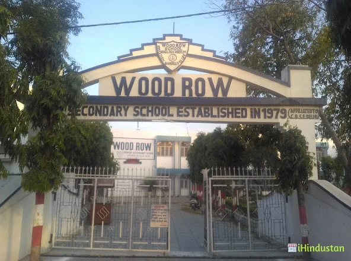
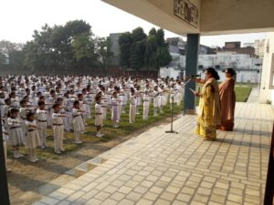
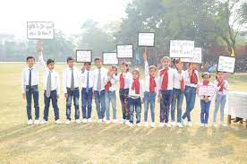
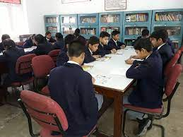
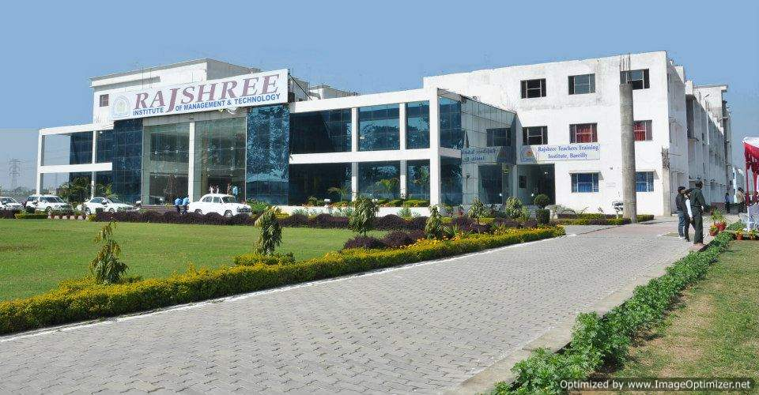
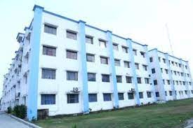
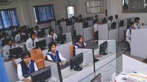
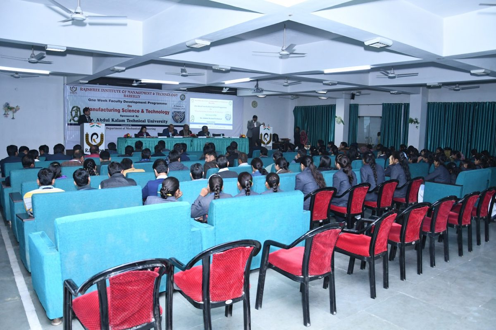

KNOW ABOUT ME
NURSURY SCHOOL
I WAS A VERY CURIOUS, PLAYFUL AND NAUGHTY KID IN MY SCHOOLING TIME.LETS TAKE A OVERVIEW ABOUT MY SCHOOLING AND I WILL PUT HERE SOME OF ME SCHOOLING MEMEORIES.


SECONDARY SCHOOL
I HAVE DONE MY SCHOOLING FROM CLASS 7TH TO CLASS 12TH AT BAREIILLY, UTTAR PRADESH.MY SCHOOL WAS WOOD ROW SENIOR SECONDARY SCHOOL (CBSE BOARD).
I SPENT 6 MOST PRECIOUS YEARS OF MY LIFE THERE AND I GOT ONE OF THE BEST FRIENDS THAT ONE CAN HAVE.
I MADE A LOT HAPPIER AND BEAUTIFUL MEMORIES THERE AS MOST OF THE STUDENT DO.
   
MY COLLEGE
THIS STAGE IS ALWAYS A CRUCIAL STAGE FOR A STUDENT TO CHOOSE A PARTICULAR PATH.I WAS VERY MUCH EXCITED AND I HAD BUNDLE OF NURVES AT THE SAME TIME TO SELECT A COLLEGE AND COURSE.
I CHOOSE RAJSHREE INSTITUTE OF MANAGEMENT AND TECHNOLOGY, BAREILLY.
BECAUSE THAT THE TIME MY FAMILY GOT FINANCIALLY WEAKENED BECAUSE FOR HEALTHCARE OF THE HEAD OF THE FAMILY.
AND I WAS HAPPY TO SEE THE INFRASTRUCTURE OF RAJSHREE , BECAUSE IT WAS HAVING AN AVERAGE INFRASTRUCTURE WITH AFFORDADLE COURSE. I MADE DECISION TO PERSUE ENGINEERING FROM COMPUTER SCIENCE BECAUSE MY TEACHER GAVE ME THE GUIDANCE.
SO, FROM HERE COLLEGE JOURNEY STARTED AND TOOK A BEAUTIFUL TURNS IN 1ST YEAR AND I GOT ENDULGE WITH FEW OF THE FRIENDS.
THAT NOW I AM HAPPY TO CALL THEM MY BESTIES.
   